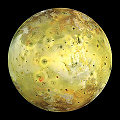
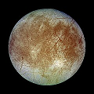
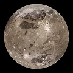
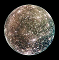

23. Kepler’s laws of planetary motion¶
23.1. Overview¶
The field of astronomy has the longest history of the observational and mathematical sciences. Even before written records began, there is evidence that humans were looking upward, as seen in cave paintings and the positioning of physical objects (such as Stonehenge). All the major ancient civilizations – Mesopotamia, Egypt, India, and China – have records of astronomical observations. Depending on the time and place, these were used for timekeeping, such as knowing when to plant crops, as well for divination, with the idea that events in the sky predict those on the Earth. These civilizations, to varying degrees, also started to uses mathematics to predict the motions of stars and planets.
One of the most developed mathematical models was by Hipparchus of Nicea in the 2nd century BC, based on Babylonian astronomical data and the previous work of Apollonius of Perga about a century before. Hipparchus had to develop what we now know as trigonometry in order to calculate the motion of the Sun and the Moon, as seen from the Earth. His observations were later used by Claudius Ptolemy in the 2nd century AD for his famous astronomical textbook, now known as the Almagest from its Arabic translation of the original Greek title.
The Ptolemaic system and observations were used for centuries, but eventually two problems developed with them. The first is that it was assumed that the stars are fixed on a “celestial sphere”, and do not move relative to each other. This is not actually true, and over two thousand years, these slight changes become noticeable. The second is that astronomical observations became more accurate, with the development of better instruments. In particular, inspired by earlier observatories in Baghdad and Istanbul, the Danish nobleman Tycho Brahe built in 1576 a large observatory on the island of Hven (now part of Sweden). His measurements of planetary and stellar positions were the best up to that time, and they showed problems with the mathematical models of the time.
{kind=link}
{kind=link}
At that time, there were two competing models for the motion of planets in the Solar System. The geocentric model, espoused by Claudius Ptolemy and others, placed the Earth at the center, with Sun, Moon, and planets moving in orbits around it. There was also the heliocentric model, which moved the Sun to the center, with the Earth in an orbit around it, just like the other planets. The latest version of this had been proposed by Nicolaus Copernicus, using measurements by Greek and Arab astronomers; this is published just before his death in 1543. However, both of these models based their systems on circular orbits. This had been refined, by imagining circles placed on circles, to get more complicated motions. However, even these modifications still predicted slightly different planetary motions than what was observed.
{kind=link}
{kind=link}
Thus, at the turn of the 17th century, there was a conflict between astronomical observations and the mathematical models trying to predict them. This is where Johannes Kepler stepped in, using Brahe’s data in an attempt to clarify the situation. His goal was to use some version of the Copernican system for a heliocentric model, and chose the planet Mars to study specifically. In one way, this was a bad choice – for many years, he made no progress in getting the motion of Mars to match a Copernican model. We now know this is because Mars is a bad match with the assumption of a perfectly circular orbit. However, in the end, Mars was the key, since it eventually led him to lay down his three laws of planetary motion. These laws, and some of their consequences, are the topic of this lesson.
Here are the objectives for this lesson:
State Kepler’s three laws of planetary motion.
Identify the conserved quantity associated with Kepler’s 2nd law.
Calculate the orbital speed necessary for a small object to orbit another mass at a given radius.
Calculate the period or semi-major axis of an object in an elliptical orbit around a larger object.
23.2. Kepler’s first law of planetary motion¶
You might have an image of the Earth and all the other planets moving in circular orbits, with the Sun sitting at the center. This is actually a fairly good picture – the Earth’s orbit around the Sun, for example, is very close to that of a circle. However, if you start taking accurate measurements, you will eventually see that the orbits of the planets are not exactly circular. This was the first key fact that Kepler discovered, and is encoded in his first law of planetary motion.
Kepler’s first law
Planets move along elliptical orbits, with the Sun at one focus of the ellipse.
So what does this mean exactly? First, the orbits are ellipses, rather than circles. You can think of an ellipse as a circle that has been “squashed” in one direction, so it is bigger in one direction than it is in the perpendicular direction. Although there is still a central point after this squashing, it turns out there are two special points called focal points or foci (the plural of focus). The sum of the distances from any point on the ellipse to both focal points is always a constant, which you can see in the following video. It also shows the meaning of the term “major axis” for the ellipse. The major axis of an ellipse is the longest diameter of the ellipse, and passes through both the focal points. The constant sum of distances is just the major axis.
You can see a simulation of the Earth’s motion around the Sun by using the PhET app below. First, select “Model” to see a simplified version of the Earth-Sun system. If you then click on the checkboxes for “Path” and “Grid”, and then press the play button, you can see what the Earth’s orbit looks like. The Sun is placed at a grid intersection at the center of the screen. What do you notice about the orbital path of the Earth on the left and right sides? Do these points the same distance away from the Sun?
The figure below gives an exaggerated version of the Earth’s orbit. The Sun is at one focus of the ellipse.
{kind=link}
You can see that this ellipse is drawn so that it is wider in the “left-right” direction than it is in the “up-down” direction. The distance from the left side to the right is the major axis. However, more important for our purposes will be half of this distance, known as the semi-major axis. The semi-major axis is denoted by the symbol \(a\), so the major axis shown in the figure is twice that, or \(2a\). Think about what would happen if the ellipse became more circular – the semi-major axis would be exactly the same as the radius of the circle! So, for a lot of things we talk about below, the semi-major axis \(a\) will replace the radius of a circle that we usually use. We will see this in more detail in the next section.
23.3. Kepler’s second law of planetary motion¶
When Kepler wrote down his laws, he described the second law in the following form.
Kepler’s second law
A line joining a planet and the Sun sweeps out equal areas during equal intervals of time.
This is perhaps a strange way to phrase it from our perspective, but it reflects the more geometric framing for physical laws at that time. A pictorial representation of the basic idea is in the video linked below.
Again, we have a planet moving in an elliptical orbit around the Sun (based on the first law). Suppose we divide the period of the planet’s orbit – which would be one year for the Earth – into twelve “months”, and draw a line between the planet and the Sun at the beginning of each month. Then Kepler’s 2nd law says that the area of each of these wedges is exactly the same. So what does this mean? Since the planet is closest to the Sun on the right-hand side, the wedge is not so long in the left-right direction. On the left side, when the planet is furthest away from the Sun, it has the longest wedge. For these two areas to be the same in the same amount of time, on the right-hand side the planet has to be traveling the fastest, while on the left-hand side it must be traveling at its slowest.
It turns out we can express the second law of planetary motion in a more modern viewpoint, using a concept we recently covered.
Kepler’s second law (modern version)
The angular momentum of the planet during its orbit around the Sun is conserved.
To show this is the same as Kepler’s statement, we need to review some facts first. Remember from Lesson 18 that the angular momentum of a point mass around an origin \({\vec r} = {\vec 0}\) can be written as
Suppose you consider a simplified system of a planet \(P\) in orbit around the Sun \(S\). Then the angular momentum of planet \(P\) moving with velocity component \(v_{\perp}\) perpendicular to the radius vector \({\vec r}\) has magnitude
Note that \(v_\perp\) is not the magnitude of the velocity, but it is just the component of the velocity in the direction perpendicular to the radial vector \({\vec r}\), pointing towards the Sun. You can see how the velocity \({\vec v}\) is broken into its perpendicular and radial (along \({\vec r}\)) components in the figure.
{kind=link}
The gravitational force \({\vec F}_{SP}\) on the planet points towards the Sun, from Newton’s law of universal gravitation, as seen in Lesson 21. The position vector \({\vec r}_P\) of the planet also points towards the Sun. Because of this, the net torque on the planet \({\vec \tau} = {\vec r}_P \times {\vec F}_{SP} = {\vec 0}\) since the two vectors are parallel; gravitation is a central force (see Lesson 18). With zero net torque, the angular momentum \(L_P\) of the planet as it orbits the Sun is conserved. Now let’s use this fact to show that conservation of angular momentum gives us Kepler’s second law of planetary motion. This says that the area \(\Delta A\) swept out by a line from the planet \(P\) to the Sun \(S\) is the same for every time period \(\Delta t\). So, for a small time \(\Delta t\), the area is really close to a triangle, as you can see from the diagram below.
{kind=link}
The angle \(\Delta \theta\) is the angular displacement of the planet seen by an observer on the Sun. This change in angle for a planet at distance \(r\) gives an arc length traveled of \(r \Delta \theta\). So the area of the triangle is
If you divide both sides by \(\Delta t\), then the “areal velocity” \(\Delta A / \Delta t\) is given by
where \(\omega\) is the angular speed of the planet. But since the tangential velocity component \(v_\perp = r \omega\), then
Thus, a constant angular momentum \(L_P\) is the same as a constant area velocity.
The two problems below use the distance known as the astronomical unit, abbreviated AU. This is the semi-major axis of the Earth’s orbit around the Sun, or 149.6 million km. However, for both problems, if you completely do your algebra first, you don’t need to know that number – your units should cancel out!
Problem
Halley’s comet is a famous object that comes close to the Sun about every 76 years; it will return to the inner solar system in the year 2061. The comet’s perihelion (closest distance to the Sun) is 0.586 AU. Its aphelion (furthest distance from the Sun) is 35.1 AU. If its speed at perihelion is 55.0 km/s, how fast is it moving (in m/s) at aphelion? This will be in late 2023, so it will happen soon!
{kind=link}
{kind=link}
Answer: 918 m/s
Problem
A Hohmann transfer orbit is the minimum energy orbit for a spacecraft to move from one orbit to another around the Sun. This would be used for a space probe travelling from Earth to Venus, for example, with orbital radii of 1.00 AU and 0.723 AU, respectively. Suppose a spacecraft is moving at 27.3 km/s at the same distance from the Sun as the Earth and is in such a transfer orbit. Once it reaches the orbit of Venus, what will its orbital speed be (in km/s)?
{kind=link}
Answer: 37.8 km/s
23.4. Kepler’s third law of planetary motion¶
23.4.1. Orbital speed¶
We will now use the following problem to motivate Kepler’s third law. These feature the Galilean satellites of Jupiter, the four large objects orbiting the planet. The satellites as a group are named after Galileo Galilei, who first realized they were moving around Jupiter in 1610.
Problem
For the values of the (essentially) circular orbits below, fill in the table with the orbital speeds for each satellite. Use the fact that the satellites travel one circumference of distance in one period of time. We will use this information later to find Jupiter’s mass.
Image |
Name |
Period \(T\) (days) |
Orbital radius \(R\) (km) |
Orbital speed \(v_t\) (km/s) |
|---|---|---|---|---|
 |
Io |
1.77 |
421,800 |
|
 |
Europa |
3.55 |
671,100 |
|
 |
Ganymede |
7.16 |
1,070,400 |
|
 |
Callisto |
16.7 |
1,882,700 |
{kind=link}
{kind=link}
{kind=link}
{kind=link}
Answers: Here is the completed table.
Image |
Name |
Period \(T\) (days) |
Orbital radius \(R\) (km) |
Orbital speed \(v_t\) (km/s) |
|---|---|---|---|---|
Io |
1.77 |
421,800 |
17.3 |
|
Europa |
3.55 |
671,100 |
13.7 |
|
Ganymede |
7.16 |
1,070,400 |
10.9 |
|
Callisto |
16.7 |
1,882,700 |
8.20 |
What provides the centripetal force for each of these satellites? It is the gravitational force between Jupiter and the satellite. Setting the magnitudes of these forces to be equal,
we can solve for the magnitude of the orbital speed of each satellite. Here \(M\) is the mass of the primary object (e.g. Jupiter), \(m\) the mass of the secondary (e.g. one of the satellites), and \(R\) is the orbital radius of that satellite around the primary \(M\). This gives us
Problem
Using this relation and using the data from the table, find the mass of Jupiter.
Answer: \(1.90 \times 10^{27}\) kg
Note that the orbital speed decreases as the radius of the orbit increases. So Callisto has a smaller orbital speed than Io. In fact, since the semi-major axis of Callisto is about four times bigger than that of Io, its speed is close to half that of Io’s. This relation also works for the planets around the Sun: Mercury has the fastest orbital speed of the eight planets, while Neptune has the smallest. This relates to what we saw with Kepler’s second law – a fixed planet will travel faster when its distance to the Sun is smaller, because its angular momentum is constant. Here, we are saying that two different satellites around Jupiter will have orbital speeds that decrease as the radius gets bigger. The two facts are related, but not the same!
We can use this equation for the speed a small object \(m\) orbits around a larger object \(M\) to find the total mechanical energy of the combined system. In particular, with the mechanical energy \(E\) given as
then by pluggin in \(v_{orb} = \sqrt{GM/R}\) and simplifying, we get
Thus, not only does the gravitational potential energy increase as \(m\) gets farther away from \(M\), but the total mechanical energy does as well. The increase in gravitational energy is more than the corresponding decrease in kinetic energy, due to the smaller orbital speed at greater distance \(R\). This relationship is a nice fact to help understand the motion of objects in elliptical orbits.
23.4.2. Kepler’s third law¶
Now let’s motivate the third law of planetary motion by considering the following situation. Suppose you want to place a satellite in an equatorial orbit around the Earth, so that its orbital period is exactly the same as the Earth’s own rotation around its axis. The benefit to this is that the satellite would always appear to be in the same location in the sky. This orbit is known as a geosynchronous orbit for the Earth, and this orbit is now populated by many communications satellites, for relaying signals to various points on the surface of the Earth.
So, to work out the orbital radius \(R\) of this circular orbit, we need to find the orbit with a specific orbital period \(T\). Starting with the orbital speed derived above, we can write this orbital speed in terms of the circumference and the period as
If we set this equal to the equation derived above, then
where \(M\) is now the mass of the Earth. Squaring both sides and rearranging somewhat, we find that
Now, we want to solve for \(R\), using the mass of the Earth as \(5.97 \times 10^{24}\) kg, and the period \(T\) is 24 hours. Solving algebraically for \(R\), and then plugging in these numbers gives that \(R\) is 42,200 km.
Problem
The planet Mars rotates once about its axis in 24 hours and 40 minutes; if Mars has a mass of \(6.39 \times 10^{23}\) kg, how far would a space probe have to be from the center of Mars in order to have the same rotational period? This is known as an areosynchronous orbit.
{kind=link}
{kind=link}
Answer: \(2.04 \times 10^4\) km
Notice that the orbit in this situation was assumed to be circular. However, conveniently enough, if you replace the radius \(R\) of a circle with the semi-major axis \(a\) of an ellipse, the equation is still correct! Thus we get that
where \(T\) is the period to complete one orbit around the mass \(M\), and \(a\) is the semi-major axis of the orbit. This numerical relation is codifed as the third of Kepler’s laws of planetary motion.
Kepler’s third law
The square of the orbital period of a planet is directly proportional to the cube of the semi-major axis of its orbit.
Notice that the statement of the law says only that \(T^2\) and \(a^3\) are proportional, i.e. that
However, this will be the same constant for all objects orbiting the same primary. For example, this constant is the same for all the Galilean satellites of Jupiter, allowing us to find the mas of that planet. A different constant would be used for all planets orbiting the same star. For this situation, with two planets \(i\) and \(j\) their periods and semi-major axes are related by
This fact helps with the next problems; for these questions, remember that the Earth’s orbit has a semi-major axis of 1 AU and a period of 1.00 yr.
Problem
In a previous problem, you saw a Hohmann transfer orbit between the Earth and Venus, with semi-major axes of 1.00 AU and 0.723 AU, respectively. If you were traveling along this orbit from Earth to Venus, how long would it take (in yr) for you to reach Venus? Hint: How far along the orbit have you traveled?
Answer: 0.400 yr
Problem
Mercury is the planet nearest to the Sun and has a rather eccentric orbit – meaning there is a sizeable difference between its closest and furthest distances away from the Sun.
Suppose Mercury takes 0.241 yr to go once around the Sun. What is its semi-major axis in AU?
If its aphelion from the Sun is 0.467 AU, what is the distance of its perihelion, in AU?
Use this information about Mercury’s orbit, and the size of an AU given earlier in this lesson, to find the mass of the Sun in kg.
{kind=link}
{kind=link}
Answers: 0.387 AU; 0.308 AU; \(1.99 \times 10^{30}\) kg
23.4.3. Effective potential energy for gravitation¶
Much like all the previous central forces we have talked about in Lesson 20, the gravitational force has an effective potential energy that is helpful in studying the motion of orbiting objects. In this case, \(U_{eff}\) is given by
with the usual notation: \(M\) is the mass of the primary object being orbited, \(m\) the secondary object in orbit, \(L\) the magnitude of the secondary’s angular momentum, and \(r\) is the center-to-center distance between the two objects. We can use this to find the speed of an object at any point along its orbit.
To start with, below is a program that sets up the orbit of a small object around a big one. This is essentially the same simulation we did previously with central forces in Lesson 16 (circular motion), except I have adapted it to the gravitational force. The large object has a mass 100 times larger than the small one; to make things easily visible, I have made the objects’ radii very small, even though this is not physically realistic! In addition, there is a graph of the effective potential energy \(U_{eff}\) for the gravitational force (as the blue curve), along with the mechanical energy \(E\) of the system (the green line). Run the program, and notice how the motion shown matches the \(U_{eff}\) vs. \(r\) graph. Remember that the gap between the mechanical energy and the effective potential energy is the radial kinetic energy, i.e. the part of the kinetic energy dependent on \(v_r\). This shows how fast the small object is moving towards or away from the larger one.
Much like we did before in Lesson 20, we can also find the turning points of the motion. Remember these are the points where the effective potential energy and mechanical energy curves meet each other, so that
With some algebra, this becomes a quadratic equation for the turning point radii \(r\) of the system, which is easily solvable. Notice that \(E < 0\) here, since this is a bound system; the moon object will never get beyond its outer turning point radius from planet.
Problem
Use the default values from the program to answer the following questions.
Find the turning points (in m) of the
moonobject.Find the semi-major axis (in m) of
moon.Use Kepler’s third law to find the period of the orbiting object (in s).
What is the speed of
moon(in cm/s) at its furthest distance fromplanet?
Answers: 1.00 m and 2.36 m; 1.68 m; 10.8 s; 63.5 cm/s
23.4.4. A more accurate orbital speed¶
For all the discussion above, we assumed that the central primary object was stationary, with the secondary object orbiting its center. When considering the Earth and the Sun, or the Moon and the Earth, this approximation works very well, since one mass in each pair is much larger than the other. However, this does violate Newton’s third law, since we are not considering the equal magnitude of gravitational force acting on the primary. Let’s now see how this changes things, and show explicitly that our previous approximation is a good one.
I will build on the Trinket app used in the previous section. Similar to what we saw in the problem from Lesson 21 (universal gravitation), in the program above, the gravitational force
on the orbiting object moon is given by the vPython command
moon.force = -(G * M * m / r ** 2) * rHat
Note that the central object planet is placed at the origin, while moon orbits in a circle at a distance r away; the vector rHat is the unit vector pointing in the same direction as the position vector moon.pos (since planet.pos is the same as the origin).
Our goal is now to find out how to include the gravitational forces on both objects. This will mean that we need to find the orbital speeds of both around a common center; hopefully it makes sense that this center will be the center of mass (CM) of the system. Because planet has a much larger mass than moon, this CM will be closer to the center of planet, but not exactly at the origin. Thus, the situation is that shown in the figure below, where I have exaggerated the distance between the origin and the CM. The two masses will both orbit CM, and always be on opposite sides of it.
{kind=link}
Problem
Using the default values in the program, find the distance (in mm) between the origin and the center of mass of the system.
Answer: 9.90 mm
From the last problem, you can see that, compared to the 1.00 m radius of the moon’s circle, the CM is very close to the center of the planet. Thus, already we can see that our approximation is rather close.
Now, let’s figure out the required orbital speed for both objects. I will call the distance from the planet to the CM \(r_{CM}\); this is the distance you calculated in the last problem. I will call the distance between the moon to the CM \(R_{CM}\). Thus, with the total distance \(R\) between the planet and the moon, we have that \(r_{CM} + R_{CM} = R\). When we find the orbital speed of the moon as we did above, we need to set the gravitational force between the two objects equal to the centripetal force of the moon as it orbits around the center of mass. Setting the magnitudes of these forces equal, we get that
There is only one change, but it is important – the radius on the right-hand side is no longer \(R\), but instead is \(R_{CM}\)! Solving this for the actual orbital speed of the moon gives
When working out the distance between the origin and the CM, you should have found algebraically that this distance \(r_{CM}\) is given in terms of the planet and moon masses \(M\) and \(m\), respectively, by
Then, with \(r_{CM} + R_{CM} = R\), we have
Plugging this back into the orbital speed equation we just found, we get
So, whenever the secondary object \(m\) has a much smaller mass than the primary \(M\), then \(M^2 / (M + m) \simeq M\), and we get back our original equation.
Problem
Find the orbital speed (m/s) of the moon, using the old and new equations for the orbital speed, and the default values from the program. Calculate your values for four sig figs. What is the percent difference between the two values? The percent difference between two values \(v_1\) and \(v_2\) is given by
Answers: Using the original orbital speed equation, \(v_{orb} = 1.265\) m/s, while with the new equation just derived, \(v_{orb} = 1.259\) m/s. The percent difference between these speeds is 0.498%.
Problem
For the program above, add in the required code, so that the planet is acted on by the gravitational force interaction between itself and the moon. Most of the code will be similar to that for the moon, but you will have to initialize the attributes planet.velocity and planet.momentum before the while loop. If the initial momentum of the planet is set as the zero vector, which way will the planet-moon system move over time?
Answer: If the additional code is done correctly, the planet-moon system will move in the \(+y\) direction. You can see this because the initial linear momentum of the system is in that direction, and linear momentum is conserved for this isolated system.
23.5. Summary¶
Although Kepler’s original formulation of his three laws of planetary motion were more about relationships between quantities, they provided a way of unifying how all the planets move into a single theoretical framework. When Newton came along later and sought to bring together all types of motion, his success in deriving Kepler’s laws was a major selling point.
Once you write Kepler’s second law in terms of angular momentum, and the third law as a relation between period and semi-major axis, re then you can go far in calculating important quantities in both astronomy and space travel. For example, if you want to travel by spacecraft from one planet to another, you use Kepler’s laws to find the necessary transfer orbit between the two, and the time it takes to travel along this orbit. As we saw with the Galilean satellites of Jupiter, knowing the details of an orbiting object gives you the mass of the primary it orbits.
This can also help understand unseen objects as well. The 2020 Nobel Prize in physics was given in part to two researchers who observed the motions of stars at the center of the Milky Way galaxy, of which the Solar System is a part. These stars are orbiting an object known to astronomers as Sgr A\(^*\) (“Sgr” is the abbreviation for the constellation of Sagittarius, where the object appears in the Earth’s sky). Although Sgr A\(^*\) is a source of radio waves, it does not emit much light in the visible range. However, using Kepler’s third law and the motions of the stars around it, the mass of Sgr A\(^*\) can be calculated. It was these motions that gave the first conclusive proof that this object is in fact a supermassive black hole, with an estimated mass of about four million times that of the Sun. You can find out more by visiting the website for the research group of one of the Nobel laurates, Andrea Ghez, including movies and animations of the stellar motions around Sgr A\(^*\).
After this lesson, you should be able to:
Calculate the orbital speed or period of a satellite moving in a circular orbit around a planet of given mass.
Find the relationship between the orbital period and semi-major axis for an elliptical orbit.